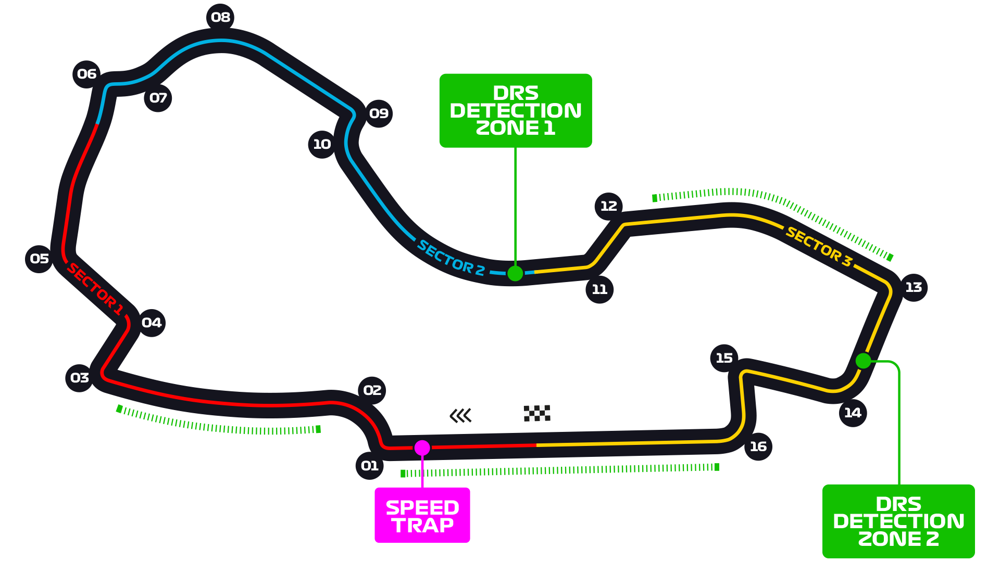

Melbourne, Australia
Often found on lists of the world’s best cities, Melbourne is a blast all year round – and it only gets better when Formula 1 rolls into town. There are bars and restaurants aplenty, you’re right by the beach, while the race’s appearance at the start of Australia’s autumn means the temperatures should be peachy. If you want to get in a grandstand, opt for either the Waite stand overlooking Turn 12, or the Brabham Grandstand on the outside of Turn 2 to watch cars jostling for position through the first chicane. Alternatively, there are some nice general admission spots on the far side of the lake – go for either around Turns 9-10 or 11-12 if you fancy some F1 picnic feels. More info